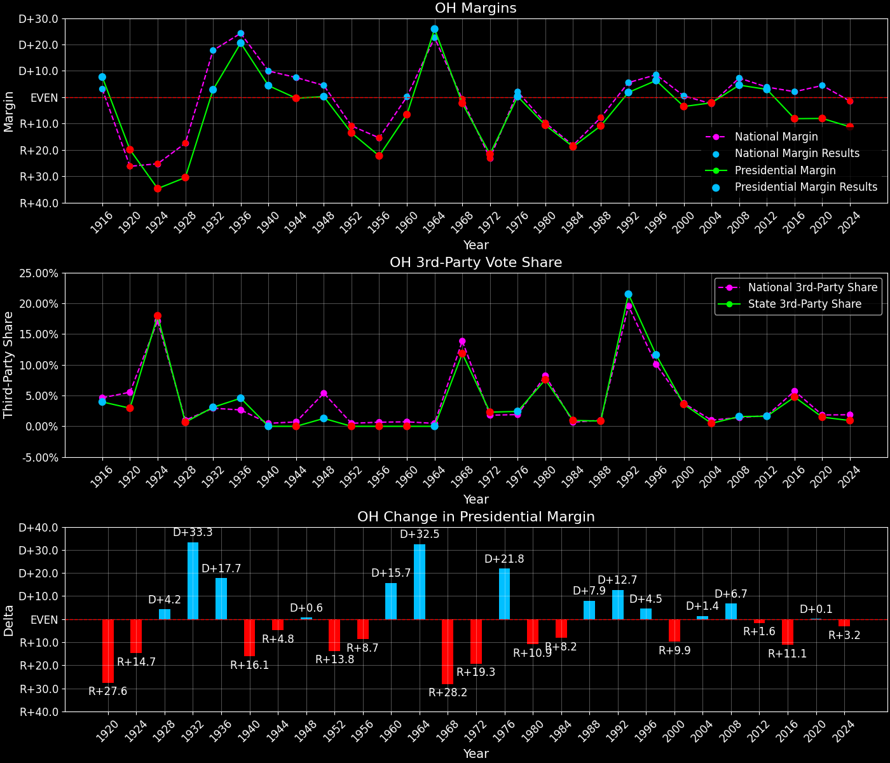

Ohio (OH) — Statewide

Margins · 3rd-Party share · Pres. deltas

Relative margins · Relative 3rd-Party · Rel. deltas
Ohio (OH) — Total Data
| Year | EVs | D | R | State Margin | Nat. Margin | Rel. Margin | Total votes |
|---|---|---|---|---|---|---|---|
| 1968 | 26 | 1,697,877(43.0%) | 1,786,468(45.2%) | R+2.2 | R+0.6 | R+1.7 | 3,950,985 |
| 1972 | 25 | 1,554,631(39.0%) | 2,430,371(61.0%) | R+22.0(Δ R+19.7) | R+23.5(Δ R+23.0) | D+1.6(Δ D+3.2) | 3,985,002 |
| 1976 | 25 | 1,993,466(50.3%) | 1,967,268(49.7%) | D+0.7(Δ D+22.6) | D+2.2(Δ D+25.7) | R+1.5(Δ R+3.1) | 3,960,734 |
| 1980 | 25 | 1,719,409(41.7%) | 2,154,599(52.3%) | R+10.6(Δ R+11.2) | R+9.9(Δ R+12.1) | R+0.7(Δ D+0.9) | 4,122,843 |
| 1984 | 23 | 1,825,350(40.5%) | 2,678,559(59.5%) | R+18.9(Δ R+8.4) | R+18.1(Δ R+8.2) | R+0.8(Δ R+0.2) | 4,503,909 |
| 1988 | 23 | 1,939,629(44.5%) | 2,416,549(55.5%) | R+10.9(Δ D+8.0) | R+7.7(Δ D+10.4) | R+3.2(Δ R+2.4) | 4,356,178 |
| 1992 | 21 | 1,984,942(40.4%) | 1,894,310(38.5%) | D+1.8(Δ D+12.8) | D+5.6(Δ D+13.3) | R+3.7(Δ R+0.5) | 4,915,678 |
| 1996 | 21 | 2,148,309(47.8%) | 1,860,768(41.4%) | D+6.4(Δ D+4.6) | D+8.6(Δ D+3.0) | R+2.2(Δ D+1.6) | 4,492,354 |
| 2000 | 21 | 2,185,831(46.5%) | 2,351,209(50.0%) | R+3.5(Δ R+9.9) | D+0.5(Δ R+8.0) | R+4.0(Δ R+1.9) | 4,700,608 |
| 2004 | 20 | 2,741,265(48.7%) | 2,859,923(50.8%) | R+2.1(Δ D+1.4) | R+2.5(Δ R+3.0) | D+0.4(Δ D+4.4) | 5,627,278 |
| 2008 | 20 | 2,940,044(51.4%) | 2,683,820(46.9%) | D+4.5(Δ D+6.6) | D+7.3(Δ D+9.7) | R+2.8(Δ R+3.1) | 5,716,544 |
| 2012 | 18 | 2,827,708(50.7%) | 2,661,439(47.7%) | D+3.0(Δ R+1.5) | D+3.9(Δ R+3.4) | R+0.9(Δ D+1.9) | 5,580,811 |
| 2016 | 18 | 2,394,165(43.7%) | 2,841,004(51.8%) | R+8.2(Δ R+11.1) | D+2.1(Δ R+1.8) | R+10.3(Δ R+9.4) | 5,480,173 |
| 2020 | 18 | 2,679,166(45.3%) | 3,154,835(53.3%) | R+8.0(Δ D+0.1) | D+4.4(Δ D+2.3) | R+12.5(Δ R+2.2) | 5,920,380 |
| 2024 | 17 | 2,533,699(43.9%) | 3,180,116(55.1%) | R+11.2(Δ R+3.2) | R+1.5(Δ R+6.0) | R+9.7(Δ D+2.8) | 5,767,788 |
Column explanations
- Δ
- Change (delta) in the value from the previous election year.
- Year
- Election year.
- EVs
- Number of electoral votes allocated to this state or unit.
- D
- Number of votes for the Democratic candidate (raw count(pct%)).
- R
- Number of votes for the Republican candidate (raw count(pct%)).
- State Margin
- Margin between the two major-party candidates, including third-party votes ((D - R)/total).
- Nat. Margin
- The national presidential margin for that year, including third-party votes ((D_total - R_total)/total_votes).
- Rel. Margin
- The presidential margin relative to the national presidential margin (Margin - Nat. Margin).
- Total votes
- Total voter turnout or ballots cast (when provided).
Ohio (OH) — Third-Party Data
| Year | D | R | Other votes | State 3rd-Party Share | 3rd-Party Nat. Share | 3rd-Party Rel. Share |
|---|---|---|---|---|---|---|
| 1968 | 1,697,877(43.0%) | 1,786,468(45.2%) | 466,640(11.8%) | 11.81% | 13.59% | -1.78% |
| 1972 | 1,554,631(39.0%) | 2,430,371(61.0%) | 0(0.0%) | 0.00% | 0.09% | -0.09% |
| 1976 | 1,993,466(50.3%) | 1,967,268(49.7%) | 0(0.0%) | 0.00% | 0.33% | -0.33% |
| 1980 | 1,719,409(41.7%) | 2,154,599(52.3%) | 248,835(6.0%) | 6.04% | 6.98% | -0.94% |
| 1984 | 1,825,350(40.5%) | 2,678,559(59.5%) | 0(0.0%) | 0.00% | 0.12% | -0.12% |
| 1988 | 1,939,629(44.5%) | 2,416,549(55.5%) | 0(0.0%) | 0.00% | 0.21% | -0.21% |
| 1992 | 1,984,942(40.4%) | 1,894,310(38.5%) | 1,036,426(21.1%) | 21.08% | 19.23% | 1.85% |
| 1996 | 2,148,309(47.8%) | 1,860,768(41.4%) | 483,277(10.8%) | 10.76% | 9.68% | 1.08% |
| 2000 | 2,185,831(46.5%) | 2,351,209(50.0%) | 163,568(3.5%) | 3.48% | 3.65% | -0.17% |
| 2004 | 2,741,265(48.7%) | 2,859,923(50.8%) | 26,090(0.5%) | 0.46% | 0.84% | -0.37% |
| 2008 | 2,940,044(51.4%) | 2,683,820(46.9%) | 92,680(1.6%) | 1.62% | 1.38% | 0.24% |
| 2012 | 2,827,708(50.7%) | 2,661,439(47.7%) | 91,664(1.6%) | 1.64% | 1.62% | 0.02% |
| 2016 | 2,394,165(43.7%) | 2,841,004(51.8%) | 245,004(4.5%) | 4.47% | 5.54% | -1.06% |
| 2020 | 2,679,166(45.3%) | 3,154,835(53.3%) | 86,379(1.5%) | 1.46% | 1.84% | -0.38% |
| 2024 | 2,533,699(43.9%) | 3,180,116(55.1%) | 53,973(0.9%) | 0.94% | 1.88% | -0.95% |
Column explanations
- Year
- Election year.
- D
- Number of votes for the Democratic candidate (raw count(pct%)).
- R
- Number of votes for the Republican candidate (raw count(pct%)).
- Other votes
- Number of votes for third-party (other) candidates (raw count(pct%)).
- State 3rd-Party Share
- Share of the vote received by third-party (other) candidates.
- 3rd-Party Nat. Share
- The national third-party share for that year (3rd-Party votes / total votes).
- 3rd-Party Rel. Share
- Third-party share relative to the national third-party share (3rd-Party share - Nat. 3rd-Party share).

Two-party margins · relative · deltas
Ohio (OH) — Two-Party Data
| Year | EVs | D | R | 2-Party Margin | 2-Party Nat. Margin | 2-Party Rel. Margin |
|---|---|---|---|---|---|---|
| 1968 | 26 | 1,697,877(48.7%) | 1,786,468(51.3%) | R+2.5 | R+0.7 | R+1.9 |
| 1972 | 25 | 1,554,631(39.0%) | 2,430,371(61.0%) | R+22.0(Δ R+19.4) | R+23.6(Δ R+22.9) | D+1.6(Δ D+3.4) |
| 1976 | 25 | 1,993,466(50.3%) | 1,967,268(49.7%) | D+0.7(Δ D+22.6) | D+2.2(Δ D+25.8) | R+1.5(Δ R+3.1) |
| 1980 | 25 | 1,719,409(44.4%) | 2,154,599(55.6%) | R+11.2(Δ R+11.9) | R+10.6(Δ R+12.8) | R+0.6(Δ D+0.9) |
| 1984 | 23 | 1,825,350(40.5%) | 2,678,559(59.5%) | R+18.9(Δ R+7.7) | R+18.1(Δ R+7.5) | R+0.8(Δ R+0.2) |
| 1988 | 23 | 1,939,629(44.5%) | 2,416,549(55.5%) | R+10.9(Δ D+8.0) | R+7.8(Δ D+10.4) | R+3.2(Δ R+2.4) |
| 1992 | 21 | 1,984,942(51.2%) | 1,894,310(48.8%) | D+2.3(Δ D+13.3) | D+6.9(Δ D+14.7) | R+4.6(Δ R+1.4) |
| 1996 | 21 | 2,148,309(53.6%) | 1,860,768(46.4%) | D+7.2(Δ D+4.8) | D+9.5(Δ D+2.6) | R+2.3(Δ D+2.3) |
| 2000 | 21 | 2,185,831(48.2%) | 2,351,209(51.8%) | R+3.6(Δ R+10.8) | D+0.5(Δ R+8.9) | R+4.2(Δ R+1.9) |
| 2004 | 20 | 2,741,265(48.9%) | 2,859,923(51.1%) | R+2.1(Δ D+1.5) | R+2.5(Δ R+3.0) | D+0.4(Δ D+4.5) |
| 2008 | 20 | 2,940,044(52.3%) | 2,683,820(47.7%) | D+4.6(Δ D+6.7) | D+7.4(Δ D+9.8) | R+2.8(Δ R+3.2) |
| 2012 | 18 | 2,827,708(51.5%) | 2,661,439(48.5%) | D+3.0(Δ R+1.5) | D+3.9(Δ R+3.4) | R+0.9(Δ D+1.9) |
| 2016 | 18 | 2,394,165(45.7%) | 2,841,004(54.3%) | R+8.5(Δ R+11.6) | D+2.2(Δ R+1.7) | R+10.8(Δ R+9.9) |
| 2020 | 18 | 2,679,166(45.9%) | 3,154,835(54.1%) | R+8.2(Δ D+0.4) | D+4.5(Δ D+2.3) | R+12.7(Δ R+1.9) |
| 2024 | 17 | 2,533,699(44.3%) | 3,180,116(55.7%) | R+11.3(Δ R+3.2) | R+1.6(Δ R+6.1) | R+9.7(Δ D+2.9) |
Column explanations
- Δ
- Change (delta) in the value from the previous election year.
- Year
- Election year.
- EVs
- Number of electoral votes allocated to this state or unit.
- D
- Number of votes for the Democratic candidate (raw count(pct%)).
- R
- Number of votes for the Republican candidate (raw count(pct%)).
- 2-Party Margin
- Margin between the two major-party candidates, ignoring third-party votes ((D - R)/(D + R)).
- 2-Party Nat. Margin
- The national presidential margin for that year, including third-party votes ((D_total - R_total)/total_votes).
- 2-Party Rel. Margin
- The presidential margin relative to the national presidential margin (Margin - Nat. Margin).